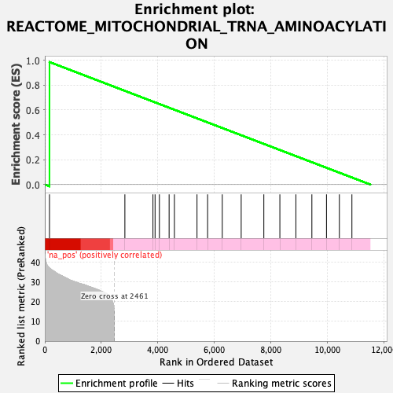
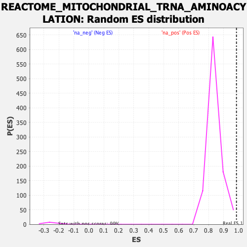

| | | Dataset | logarithmic_genelist.rnk |
| Phenotype | NoPhenotypeAvailable |
| Upregulated in class | na_pos |
| GeneSet | REACTOME_MITOCHONDRIAL_TRNA_AMINOACYLATION |
| Enrichment Score (ES) | 0.98556525 |
| Normalized Enrichment Score (NES) | 1.1770152 |
| Nominal p-value | 0.0050607286 |
| FDR q-value | 0.14532915 |
| FWER p-Value | 0.82 |
Table: GSEA Results Summary

Fig 1: Enrichment plot: REACTOME_MITOCHONDRIAL_TRNA_AMINOACYLATION
Profile of the Running ES Score & Positions of GeneSet Members on the Rank Ordered List

Fig 2: REACTOME_MITOCHONDRIAL_TRNA_AMINOACYLATION: Random ES distribution
Gene set null distribution of ES for REACTOME_MITOCHONDRIAL_TRNA_AMINOACYLATION